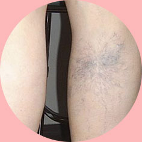
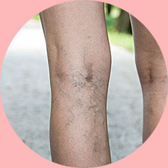

¿POR QUÉ NO SE PUEDE IGNORAR LAS VARICES?

Hasta el grado cero de la enfermedad puede causar insuficiencia venosa crónica ante la cual la medicina hasta hoy día no puede hacer nada

Las varices sobre todo es un riesgo muy alto de trombosis. El trombo puede romperse en cualquier momento y en un instante matar a la persona.

Las varices progresivas provocan la difusión de la úlcera trófica en todo el cuerpo que solo puede ser curada al trasplantar la piel.